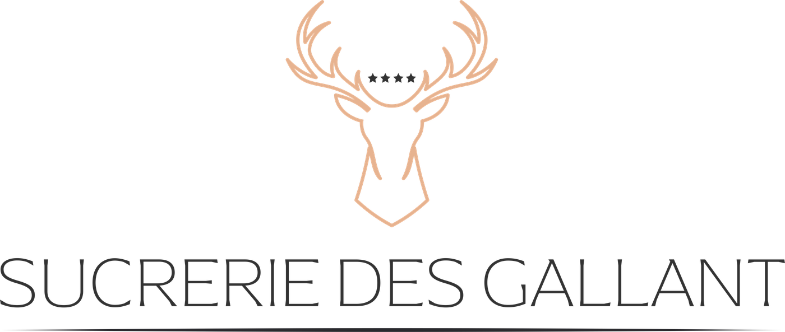
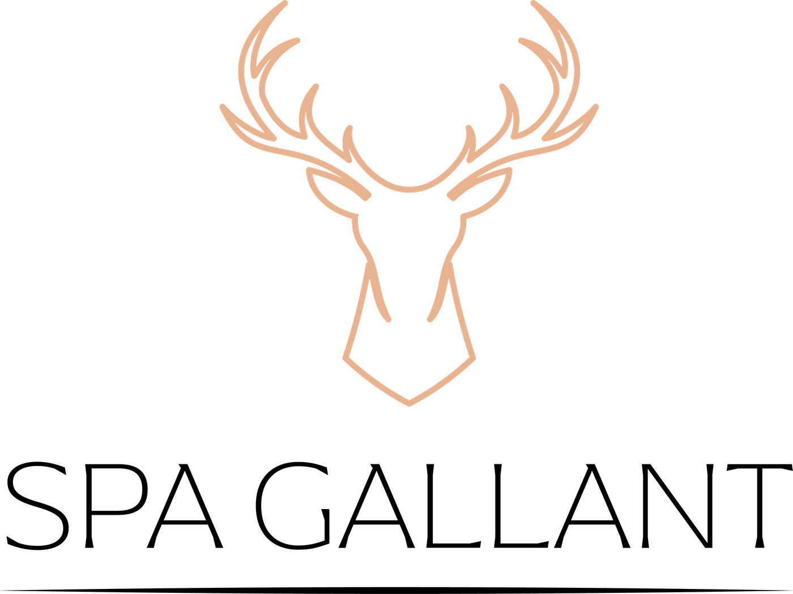

Nos bonbonnières à l'érable

Un souvenir sucré de notre érablière et de la Sucrerie des Gallant, à offrir à vos invités.
Nos bouteilles de sirop d'érable sont offertes en quatre formats :
- Feuille d'érable moyenne, 100 ml
- Feuille d'érable grande, 250 ml
- Mini cruchon, 100 ml
- Cruchon, 250 ml
Informez-vous auprès de votre coordonnatrice pour passer votre commande.
Spa Gallant

La veille du mariage, offrez-vous un moment de détente : un soin en massothérapie au Spa Gallant.
Réservation requise pour les soins en massothérapie : voyez-le avec votre coordonnatrice, au plus tard lors de la rencontre finale.
Le feu de foyer extérieur
Pour finir la soirée autour du feu, sous les étoiles : offrez à vos invités un feu de foyer extérieur.
- 75 $, taxes et frais de service en sus
- Bois à volonté
- Chaque salle a son propre foyer extérieur attitré
- Vous choisissez l'heure à laquelle on allume le feu
Indiquez votre choix et l'heure souhaitée dans le formulaire « La Grande Finale », page « Vins, bar et fin de soirée ».
Le buffet de fin de soirée
Pour prolonger le plaisir : consultez le buffet de fin de soirée dans la rubrique « Menu, bar et dégustation ».